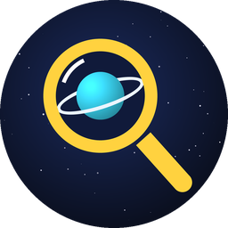

Ciencia con Pruebas
Historias reales de ciencia, espacio e historia. Cada dato, con su fuente.
Ver el canal en YouTubeMISTERIO
Sucesos reales que la ciencia intenta explicar.
HISTORIA
Momentos que cambiaron el mundo, con sus documentos.
ESPACIO
Descubrimientos del cosmos con imágenes de la NASA.
CIENCIA
Experimentos y descubrimientos que parecen imposibles.
Cómo trabajamos
Cada vídeo cuenta una historia verificada y muestra en pantalla la prueba: el documento, la fotografía o el estudio científico. Las fuentes y los créditos de las imágenes están siempre en la descripción de cada vídeo.
Usamos imágenes de dominio público o con licencia libre (NASA, Wikimedia Commons, museos). La narración se genera con voz sintética y los gráficos y la música son originales del canal.